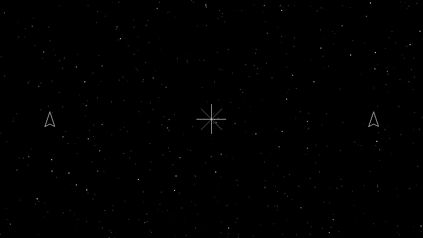

Primitives
Ported from Microsoft's XNA 4.0 Primitives Sample.
Source for this sample on GitHub ↗

Play ▸Opens in a new tab and runs in this browser. Click the canvas first so it receives the keyboard.
About this sample
Spacewar's retro mode draws everything with points and lines. This sample takes the idea further and
builds PrimitiveBatch, a small layer over GraphicsDevice.DrawUserPrimitives
that lets you draw points, lines and triangles without setting up a vertex buffer for each shape.
It follows the same Begin/End pattern as SpriteBatch: call Begin, call
AddVertex as many times as you need, then End. Internally the batch fills an
array of vertices and flushes it to the graphics device whenever the array runs out of room, so the
number of draw calls stays low however many shapes you add.
That makes it useful for more than drawing a game. Arbitrary primitives on demand are exactly what you want when visualising collision volumes, spatial partitions or any other piece of state that is easier to see than to read.
The sample itself draws a scene from Spacewar to show the batch in use.
Controls
The sample runs on its own; the only control is how to leave it.
| Action | Keyboard | Gamepad |
|---|---|---|
| Exit | Esc | Back |
In the browser, exiting ends the sample rather than closing the tab — close the tab yourself when you are done.